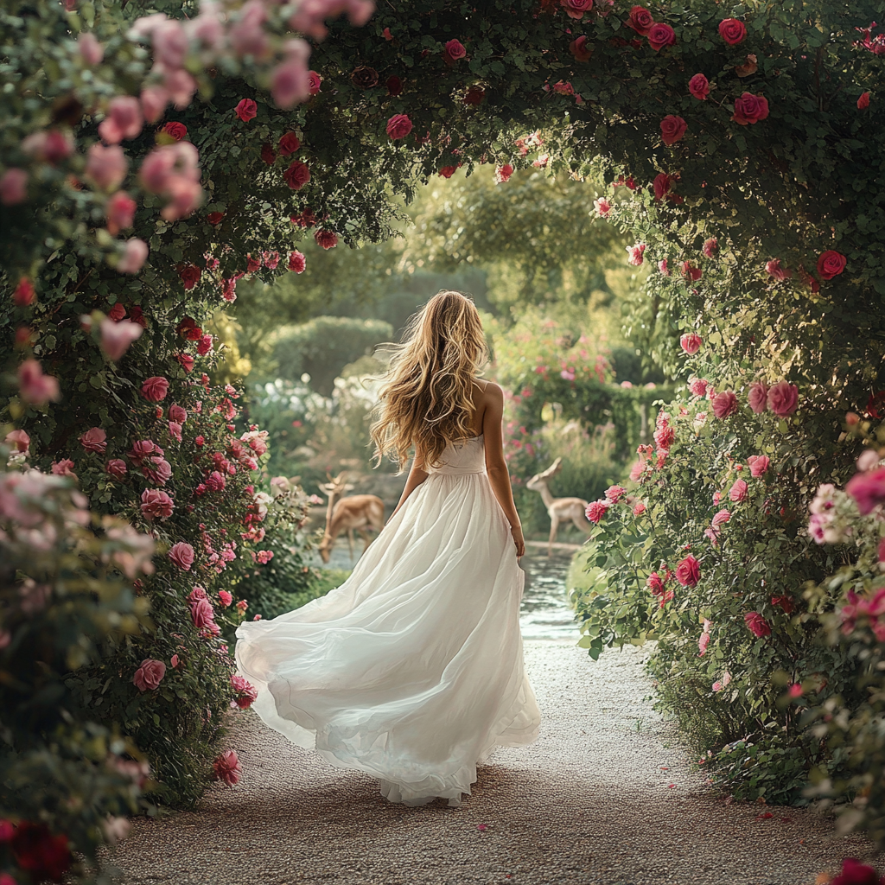

Brand identity for a unique garden restaurant business.



The Project
Oasis is a unique garden restaurant concept — a natural, intimate dining experience nestled in a lush outdoor setting. The brand identity needed to feel as organic and distinctive as the space itself, balancing warmth, sophistication, and a connection to nature.
Working as a solo designer, I developed the full visual identity: wordmark, color system, typography, and application across physical touchpoints including packaging and signage.